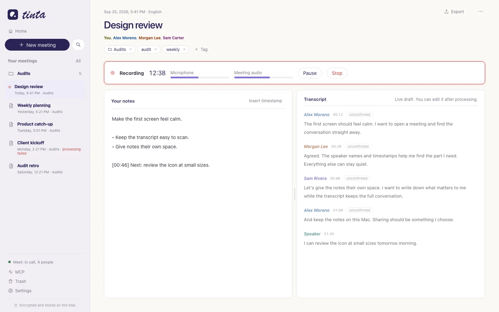

Notes and transcript, side by side
Write your notes while the draft transcript appears next to them. To mark a moment, insert a timestamp with one click.
- The live draft shows during the call.
- After the call, Tinta processes the recording on your Mac and improves the text.
- Your notes stay separate from the transcript.
